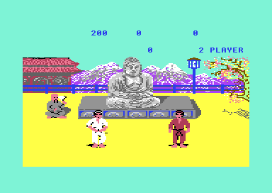

<meta charset="utf-8">
<meta name="viewport" content="width=device-width, initial-scale=1">
<title>{{title}}</title>
<link rel="preconnect" href="https://fonts.googleapis.com">
<link rel="stylesheet" href="https://fonts.googleapis.com/css2?family=Lato:wght@400;700;900&family=IBM+Plex+Mono:wght@400;500&display=swap">
<link rel="stylesheet" href="reference/fist-page.css">
<!-- tabs -->
<header class="hero">
  <p class="eyebrow">{{platform}} · {{year}} · {{publisher}}</p>
  <h1>{{title}}</h1>
  <p class="sub">Fuji, a lake, a dojo and the Buddha: four pictures packed into 13 kilobytes and unpacked into the bitmap at the start of each stage.</p>
</header>
<main class="wrap">
<section id="backdrops">
  <p class="fig">01 · The backdrops</p>
  <h2 class="t">Four pictures in 13 kilobytes</h2>
  <p class="lede">The backdrop changes every stage, and the disk is never read after loading. All four pictures sit in memory packed, and are unpacked into the bitmap when the stage begins.</p>
  <div class="plate">
    <div class="fx-ctl" id="bdBtns"></div>
    <canvas id="bdCv" width="640" height="192"></canvas>
    <div class="fx-ctl" style="margin-top:12px"><button class="fx-btn" id="bdPlay">Replay the unpacking</button><input type="range" id="bdIn" min="0" max="3840" value="3840"><span class="fx-out" id="bdOut"></span></div>
    <p class="cap">Unpacked on this page from the game's bytes by ports of <code>bitmap_unpack</code> (<code>$17BB</code>) and <code>colour_unpack</code> (<code>$1849</code>); for the first backdrop the result matches the snapshot's bitmap and screen colours byte for byte. The slider replays the bitmap writes in the order the game makes them.</p>
  </div>
  <table class="fx-tab" id="bdTab"></table>
  <p>The bitmap is packed as runs, read from the end of the stream backwards and written from the bottom of the picture up (<code>$F53F</code> down to <code>$E640</code>): a control byte below <code>$80</code> copies that many bytes, one above repeats a single byte. The colours are packed separately as four-bit values, in three passes over the 480 colour cells. Each picture covers character rows 5 to 16, the band between the score panel and the floor.</p>
  <p>The floor below never changes. Its colours are all set to yellow (<code>$192F</code>), so whatever the bitmap holds there is invisible, and the game keeps its speech samples in that hidden part of the bitmap (<code>$F540</code>-<code>$FFDC</code>).</p>
</section>

<section id="judge">
  <p class="fig">02 · The judge</p>
  <h2 class="t">The seated judge is painted into every picture</h2>
  <p class="lede">Each backdrop has a small seated figure at one side. When a bout is decided, the game puts two sprites over him, at a position kept for each backdrop, to signal the winner.</p>
  
  <p class="cap">The end of a two-player game, captured in the emulator. <code>judge_decision</code> (<code>$1F93</code>) takes the sprite pointer and the position from four-entry tables indexed by the backdrop (<code>$1FFA</code>-<code>$2009</code>).</p>
</section>
</main>
<footer style="margin:16px 0 0;padding:22px var(--gx) 0;border-top:1px solid #e0ded8;font-family:'IBM Plex Mono',ui-monospace,Menlo,monospace;font-size:12px;color:#80838a"><a href="https://github.com/gamesexplained/gamesexplained" aria-label="GitHub" style="display:inline-flex;align-items:center;justify-content:center;width:26px;height:26px;margin-left:8px;border:1px solid #e0ded8;border-radius:7px;background:#ffffff;color:#80838a;vertical-align:middle"><svg width="15" height="15" viewBox="0 0 24 24" fill="currentColor" aria-hidden="true"><path d="M12 .297c-6.63 0-12 5.373-12 12 0 5.303 3.438 9.8 8.205 11.385.6.113.82-.258.82-.577 0-.285-.01-1.04-.015-2.04-3.338.724-4.042-1.61-4.042-1.61C4.422 18.07 3.633 17.7 3.633 17.7c-1.087-.744.084-.729.084-.729 1.205.084 1.838 1.236 1.838 1.236 1.07 1.835 2.809 1.305 3.495.998.108-.776.417-1.305.76-1.605-2.665-.3-5.466-1.332-5.466-5.93 0-1.31.465-2.38 1.235-3.22-.135-.303-.54-1.523.105-3.176 0 0 1.005-.322 3.3 1.23.96-.267 1.98-.399 3-.405 1.02.006 2.04.138 3 .405 2.28-1.552 3.285-1.23 3.285-1.23.645 1.653.24 2.873.12 3.176.765.84 1.23 1.91 1.23 3.22 0 4.61-2.805 5.625-5.475 5.92.42.36.81 1.096.81 2.22 0 1.606-.015 2.896-.015 3.286 0 .315.21.69.825.57C20.565 22.092 24 17.592 24 12.297c0-6.627-5.373-12-12-12"/></svg></a><a href="https://discord.gg/3V9GWyRDWV" aria-label="Discord" style="display:inline-flex;align-items:center;justify-content:center;width:26px;height:26px;margin-left:8px;border:1px solid #e0ded8;border-radius:7px;background:#ffffff;color:#80838a;vertical-align:middle"><svg width="15" height="15" viewBox="0 0 24 24" fill="currentColor" aria-hidden="true"><path d="M20.317 4.3698a19.7913 19.7913 0 00-4.8851-1.5152.0741.0741 0 00-.0785.0371c-.211.3753-.4447.8648-.6083 1.2495-1.8447-.2762-3.68-.2762-5.4868 0-.1636-.3933-.4058-.8742-.6177-1.2495a.077.077 0 00-.0785-.037 19.7363 19.7363 0 00-4.8852 1.515.0699.0699 0 00-.0321.0277C.5334 9.0458-.319 13.5799.0992 18.0578a.0824.0824 0 00.0312.0561c2.0528 1.5076 4.0413 2.4228 5.9929 3.0294a.0777.0777 0 00.0842-.0276c.4616-.6304.8731-1.2952 1.226-1.9942a.076.076 0 00-.0416-.1057c-.6528-.2476-1.2743-.5495-1.8722-.8923a.077.077 0 01-.0076-.1277c.1258-.0943.2517-.1923.3718-.2914a.0743.0743 0 01.0776-.0105c3.9278 1.7933 8.18 1.7933 12.0614 0a.0739.0739 0 01.0785.0095c.1202.099.246.1981.3728.2924a.077.077 0 01-.0066.1276 12.2986 12.2986 0 01-1.873.8914.0766.0766 0 00-.0407.1067c.3604.698.7719 1.3628 1.225 1.9932a.076.076 0 00.0842.0286c1.961-.6067 3.9495-1.5219 6.0023-3.0294a.077.077 0 00.0313-.0552c.5004-5.177-.8382-9.6739-3.5485-13.6604a.061.061 0 00-.0312-.0286zM8.02 15.3312c-1.1825 0-2.1569-1.0857-2.1569-2.419 0-1.3332.9555-2.4189 2.157-2.4189 1.2108 0 2.1757 1.0952 2.1568 2.419 0 1.3332-.9555 2.4189-2.1569 2.4189zm7.9748 0c-1.1825 0-2.1569-1.0857-2.1569-2.419 0-1.3332.9554-2.4189 2.1569-2.4189 1.2108 0 2.1757 1.0952 2.1568 2.419 0 1.3332-.946 2.4189-2.1568 2.4189Z"/></svg></a><br>© Games Explained contributors. Write-ups, facts and symbol maps are available under <a href="https://creativecommons.org/licenses/by-sa/4.0/" style="color:#1f5fa8;text-decoration:none">CC BY-SA 4.0</a>; code under <a href="https://opensource.org/licenses/MIT" style="color:#1f5fa8;text-decoration:none">MIT</a></footer>
<!-- the listing pieces this page's widgets read, which the build fills in from the listing -->
<script type="application/json" data-listing="listing.json">["$0000-$0000", "$1839-$1848", "$3F5F-$71FF"]</script>
<script src="../../lib/c64.js"></script>
<script src="../../lib/sid.js"></script>
<script src="reference/fist-page.js"></script>
